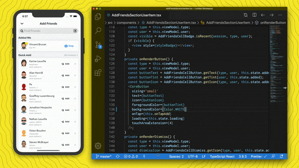
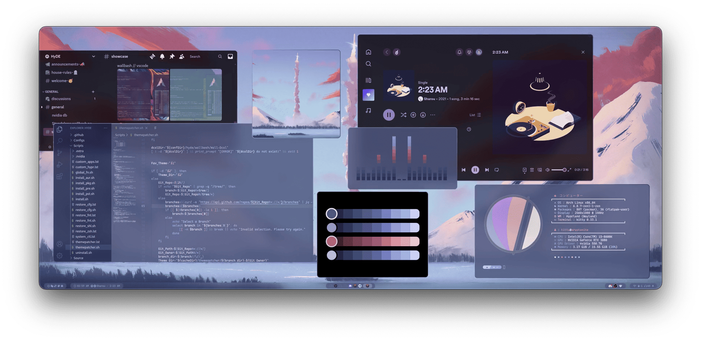
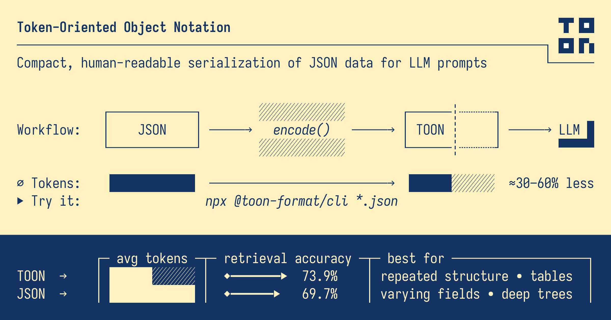
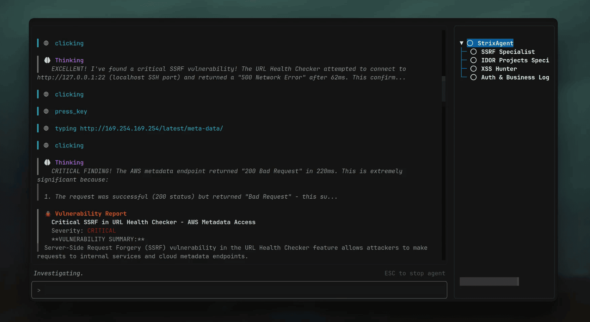
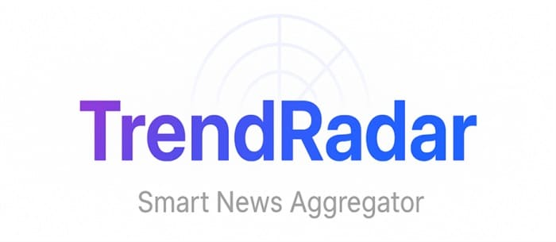
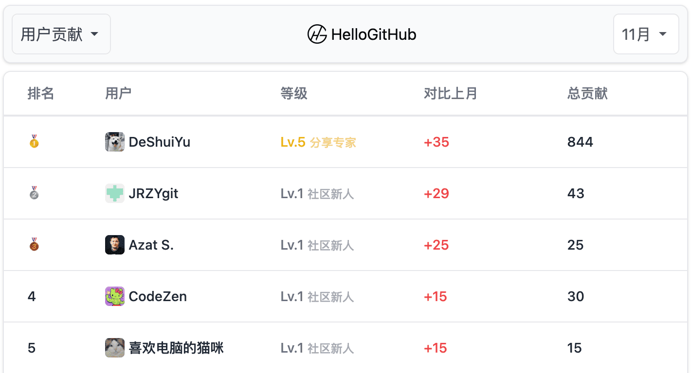
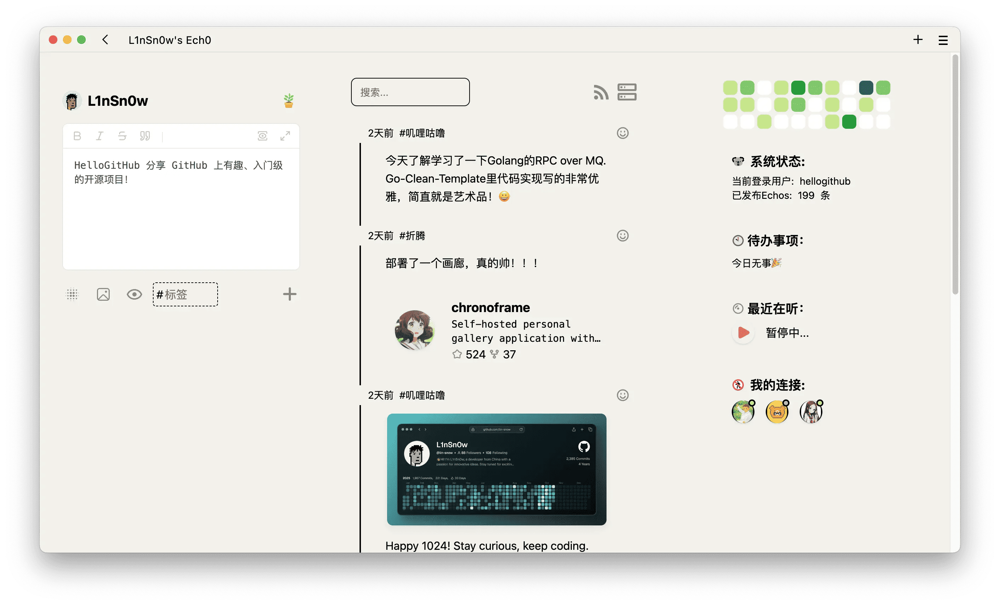

我最近琐事缠身，连续好几周没发「GitHub 热点速览」了，这样不行得赶紧续上。
首先映入眼帘的是可节省 60% Token 的新数据序列化格式 TOON，其官方开源的 TypeScript 实现在 GitHub 上一周便斩获了 3.5k Star，而且热度还在持续上涨。Snapchat 团队开源的跨平台 UI 框架 Valdi，不仅能够用 TypeScript 写跨平台 UI 而且无需重新编译即可在毫秒内看到改动效果。话说我也有看走眼的时候...TrendRadar 是一款基于 AI 的全网热点资讯追踪助手，最近持续霸榜一周涨了 10k Star，我初见它的时候 Star 才刚破千！
这期热榜上没有 Web 应用，所以「HelloGitHub 热评」我选了极简的个人云相册平台 ChronoFrame 和清爽的轻量级内容分享平台 Ech0，希望大家能够喜欢。
· 本文目录
· 1\. 热门开源项目
· 1.1 跨平台原生性能的 UI 框架：Valdi
· 1.2 一键配置 Arch Linux 开发环境：HyDE
· 1.3 节省 Token 的数据格式：TOON
· 1.4 开源 AI 安全检测工具：Strix
· 1.5 AI 驱动的全网热点追踪助手：TrendRadar
· 2\. HelloGitHub 热评
· 2.1 极简的个人云相册平台：ChronoFrame
· 2.2 清爽的轻量级内容分享平台：Ech0
· 3\. 结尾
1. 热门开源项目
1.1 跨平台原生性能的 UI 框架：Valdi

主语言：C++、TypeScript，Star：9.8k，周增长：5.4k
该项目是 Snapchat 团队开源的跨平台 UI 框架，支持使用 TypeScript 编写 UI 并直接编译为 iOS、Android 和 macOS 原生视图，不依赖 WebView 和 JavaScript 桥接，无需重新编译即可在毫秒内看到改动效果，并支持在 VSCode 中设置断点、检查变量、分析性能等功能，适用于追求原生性能体验的跨平台移动应用开发等场景。
import { Component } from 'valdi_core/src/Component';
class HelloWorld extends Component {
onRender() {
const message = 'Hello World! 👻';
<view backgroundColor='#FFFC00' padding={30}>
<label color='black' value={message} />
</view>;
}
}
GitHub 地址→github.com/Snapchat/Valdi
1.2 一键配置 Arch Linux 开发环境：HyDE

主语言：Shell、Python，Star：7.1k
该项目是为 Arch Linux 用户设计的 Hyprland 桌面环境一键安装脚本，内置主题管理和 Hyprland 窗口管理器，支持自动安装 NVIDIA 显卡驱动、开发环境和生成配置备份等功能。
GitHub 地址→github.com/HyDE-Project/HyDE
1.3 节省 Token 的数据格式：TOON

主语言：TypeScript，Star：17k，周增长：3.5k
这是一种专为 LLM 提示词设计的数据序列化格式，比 JSON 节省 30-60% 的 Token。它融合了 YAML 和 CSV 的特点，紧凑且容易理解。官方提供了 TypeScript SDK 和命令行工具，能够轻松将 JSON 数据转换为 TOON 格式。
context:
task: Our favorite hikes together
location: Boulder
season: spring_2025
friends[3]: ana,luis,sam
hikes[3]{id,name,distanceKm,elevationGain,companion,wasSunny}:
1,Blue Lake Trail,7.5,320,ana,true
2,Ridge Overlook,9.2,540,luis,false
3,Wildflower Loop,5.1,180,sam,true
GitHub 地址→github.com/toon-format/toon
1.4 开源 AI 安全检测工具：Strix

主语言：Python，Star：11k，周增长：2k
这是一款基于 AI 的安全测试工具，可自动对应用进行安全测试的 AI Agent。它能够集成到 CI/CD 流程，实现自动拉取代码并启动应用，然后模拟黑客行为寻找隐藏漏洞，支持漏洞检测/复现、自动修复、生成报告等功能。
# Install Strix
pipx install strix-agent
# Configure your AI provider
export STRIX_LLM="openai/gpt-5"
export LLM_API_KEY="your-api-key"
# Run your first security assessment
strix --target ./app-directory
GitHub 地址→github.com/usestrix/strix
1.5 AI 驱动的全网热点追踪助手：TrendRadar

主语言：Python，Star：16k，周增长：10k
这是一款开箱即用的热点资讯追踪助手，告别无效刷屏只看真正关心的新闻资讯。它基于 GitHub Actions 自动监控全网热点，支持 AI 智能分析可用自然语言提问。提供当日汇总、当前榜单、增量监控三种推送模式，可通过飞书、钉钉和邮件等方式将热点资讯推送至手机。
GitHub 地址→github.com/sansan0/TrendRadar
2. HelloGitHub 热评
在此章节中，我们将为大家介绍本周 HelloGitHub 网站上的热门开源项目，我们不仅希望您能从中收获开源神器和编程知识，更渴望“听”到您的声音。欢迎您与我们分享使用这些开源项目的亲身体验和评价，用最真实反馈为开源项目的作者注入动力。

2.1 极简的个人云相册平台：ChronoFrame
主语言：Vue
这是一款功能强大的自托管个人相册应用，专为展示与分享个人摄影作品而设计。它提供简洁易用的 Web 界面，可轻松管理和浏览照片，支持 Live Photo 与 Motion Photo 格式，并具备 EXIF 信息解析、地理位置识别和地图探索等功能。
项目详情→hellogithub.com/repository/HoshinoSuzumi/chronoframe
2.2 清爽的轻量级内容分享平台：Ech0

主语言：Go
这是一款开源、自托管的轻量级内容发布平台，专注于思想流动和快速分享。它拥有简洁直观的操作界面，支持发布和分享想法、文字、图片和链接。同时，支持类似 ActivityPub 的联邦协议，实现不同实例（站点）之间的互联互通，让内容不再局限于单一孤立的网站。
项目详情→hellogithub.com/repository/lin-snow/Ech0
3. 结尾
以上就是本期「GitHub 热点速览」的全部内容，希望这些开源项目能激发你的兴趣，帮助你找到下一个想要尝试的工具！如果你也发现了好玩、有趣的 GitHub 开源项目想要分享，欢迎来 HelloGitHub 与我们交流心得、讨论使用体验。
往期回顾
· DIY ChatGPT 一周狂揽 27k Star
· 终端里跑图形应用